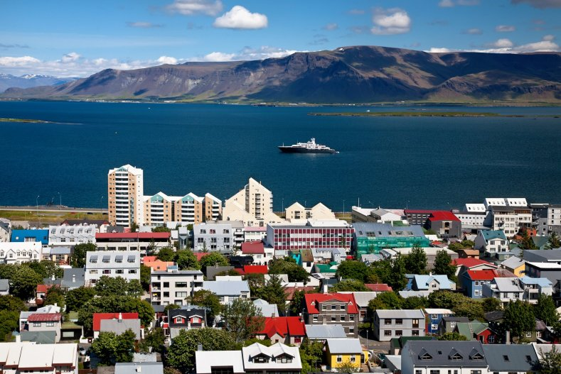
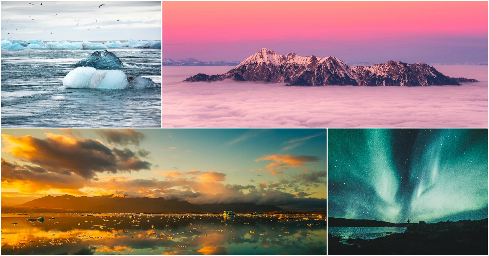
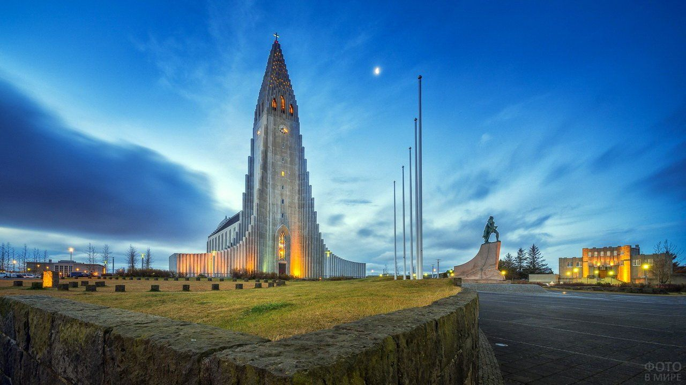

Исландия
Столица
 Главный город страны – Рейкьявик – самая северная столица в мире и самый большой город Исландии. Согласно официальной статистике от 1 января 2014 года, население Рейкьявика составляет 120 339 человек. Если к этому числу прибавить население всех соседних небольших городов, которые в настоящее время включены в черту столицы, то население Рейкьявика составит более 200 000 человек. Это 61% всего населения Исландии. Согласно сагам считается, что Рейкьявик был основан в 874 году викингом из Норвегии Ингольфуром Арнарсоном. В переводе с древнескандинавского языка Рейкьявик означает «дымящаяся бухта». Номинально город был признан столицей Исландии в 1845 г., когда был вновь образован Альтинг (парламент страны). О том, что это столица, напоминают здание исландской фондовой биржи, огромная гавань с множеством больших судов, здание Национального парламента, Дом правительства, университет Исландии, художественные галереи, музеи, музыкальные заведения, театры и множество ресторанов. В 2000 году Рейкьявик был избран одним из девяти «городов европейской культуры», что обеспечило массовый туристический поток в столицу Исландии и славу города «обязательного к посещению».
Климат
 В стране преобладает субарктический морской климат, который на побережье смягчается теплым течением Гольфстрим. Поэтому здесь сравнительно мягкая сырая зима (средняя температура в январе -1°С) и прохладное пасмурное лето (средняя температура в июле +10…+12°С). Погода в Исландии непредсказуемая и изменяется довольно резко в зависимости от прохождения циклонов. Исландцы шутят: «У нас все четыре времени года проходят в один день!». Круглый год на острове отмечаются сильные ветра, туманы и снегопады. Среднее количество осадков в прибрежных районах страны 1500 мм в год, на ледниковых куполах – до 4000 мм в год. Любопытно, что самое сухое место в Исландии находится в непосредственной близости от ледника Ватнайокудль, где вся вода превращается в лед.
Население
Население Исландии насчитывает 332 529 человек (по данным от 01.01.17). С плотностью населения лишь 3,1 человека на 1 кв. км Исландия является одной из самых малонаселенных стран мира. Около 92% населения составляют этнические исландцы, что делает эту страну одной из самых однородных по национальному составу стран мира. Средняя продолжительность жизни среди мужчин - 78лет, среди женщин – 83 года. Долгожительство исландцев обусловлено низкой загрязненностью среды, хорошим медицинским обслуживанием и мощной социальной политикой государства. Исландия также имеет самые высокие в Европейском союзе показатели по уровню рождаемости (почти 2 ребенка на каждую женщину) и один из самых низких показателей в мире по уровню детской смертности.
Язык
Официальный язык страны – исландский. Он относится к западно-скандинавской ветви северогерманской группы языков, входящих в состав большой индоевропейской языковой семьи. По причине изолированности Исландии язык ее жителей почти не трансформировался и не слился с другими скандинавскими языками. Исландский язык является одновременно и современным, и древним; это один из древних языков, который выжил и сохранился в неизменном виде по прошествии тысячелетия. Считается, что исландцы могут читать тексты средневековых саг так же быстро, как читают газету. Исландский язык с его богатой лексикой может многое поведать о викингах, говоривших на нем. В исландском языке нет слова «пожалуйста», тогда как известно более 60 исландских слов, соответствующих значению «дьявол». Второй язык, который преподается во всех исландских школах, – датский.
Достопримечательности
Хатльгримскиркья
Хадльгримскиркья — лютеранская церковь в Рейкьявике, столице Исландии. Это здание — четвёртое по высоте сооружение в Исландии, после длинноволновой радиомачты Хеллисандур, Эйларского длинноволнового радиопередатчика и Смараторгской башни. Проект церкви был разработан в 1937 году архитектором Гудйоуном Самуэльсоном. На постройку церкви ушел 41 год. Строительные работы начались в 1945 году, а закончились в 1986 году. Крипта и хоры были закончены в 1948 году, башня и крылья — в 1974 году. Неф был освящён в 1986 году. Церковь находится в центре Рейкьявика, и видна из любой части города. Она стала одной из главных достопримечательностей города. В церкви размещается большой орган, созданный германским мастером Йоханесом Клайсом из Бонна. Орган является механическим, имеет 5275 труб, его высота равна 15 метрам, а вес — 25 тоннам.
Церковь также используется в качестве обзорной вышки, с которой открывается замечательный вид на Рейкьявик и окружающие его горы. Перед церковью расположена статуя Лейфа Счастливого, подаренная Соединёнными Штатами Америки в 1930 году в честь тысячелетнего юбилея Исландского парламента.
